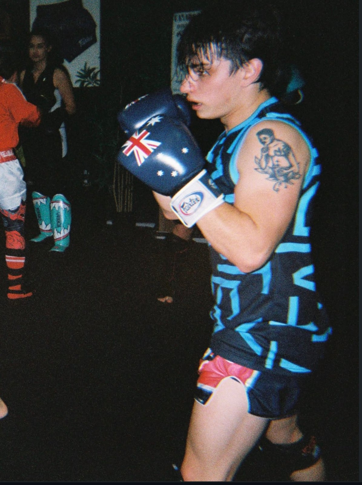
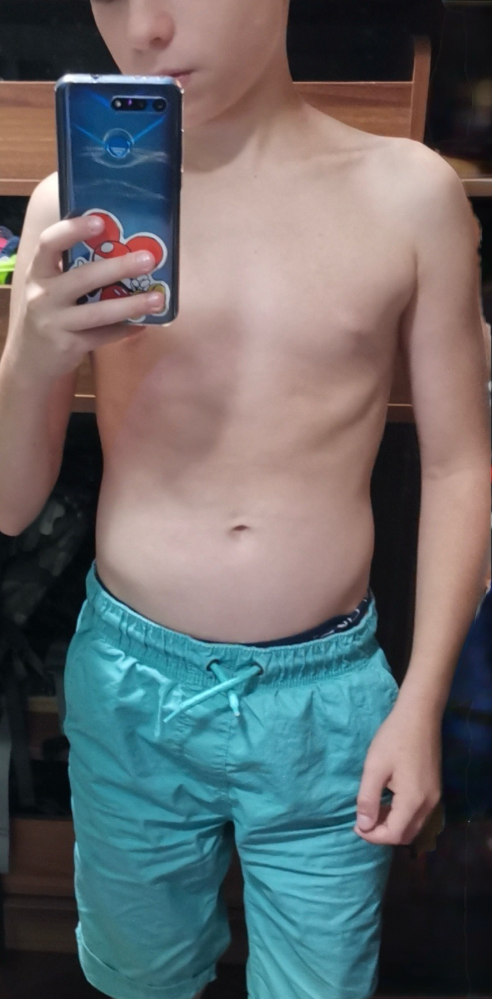
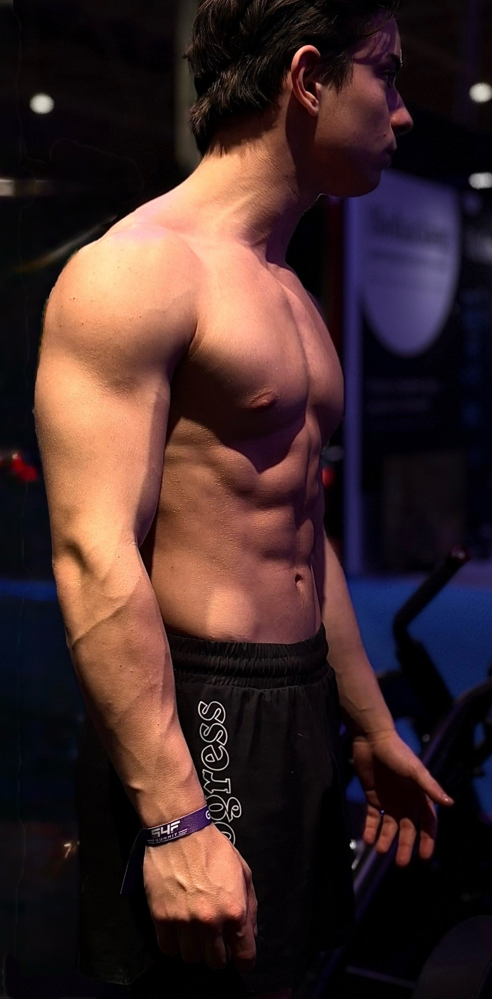
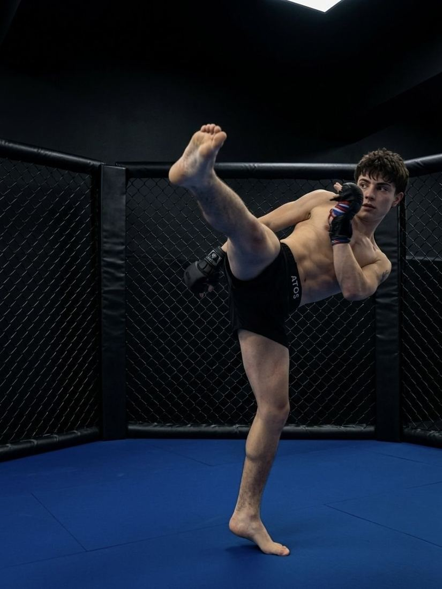
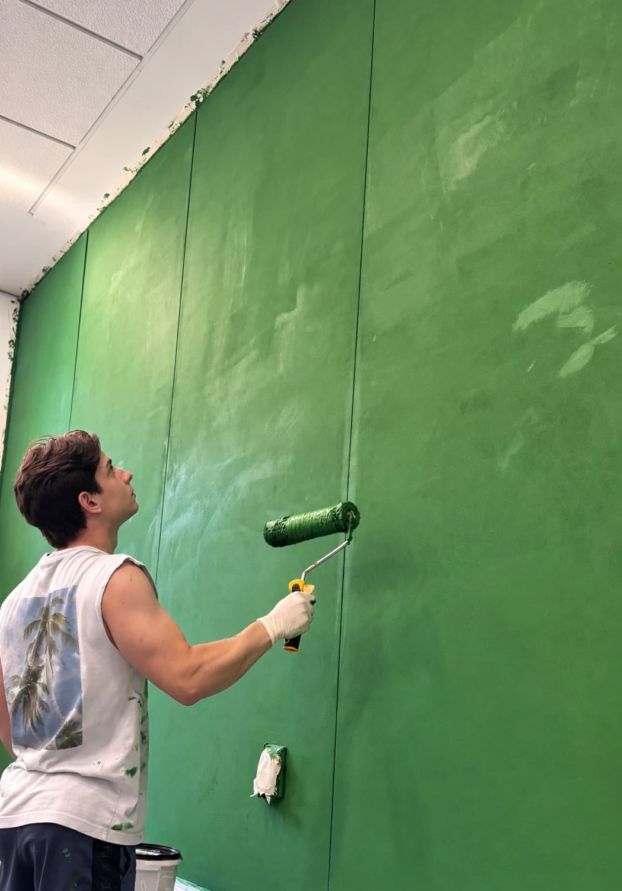
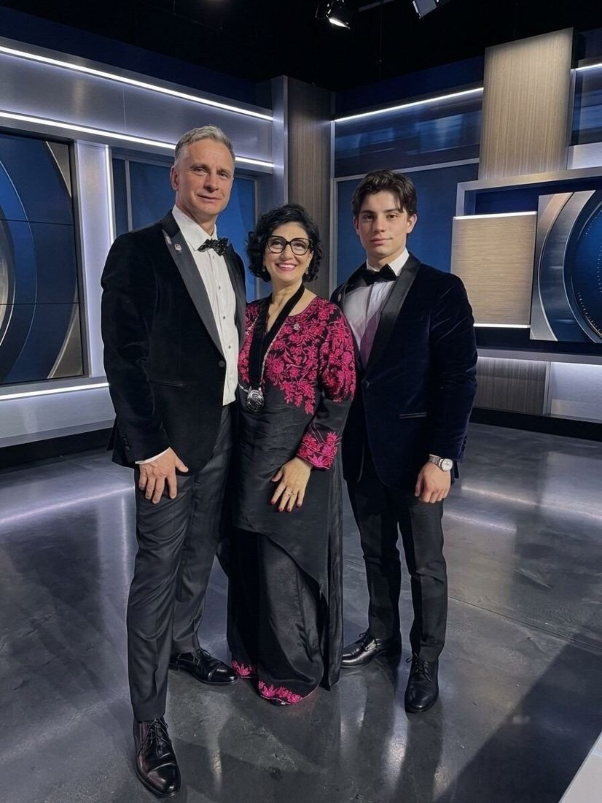
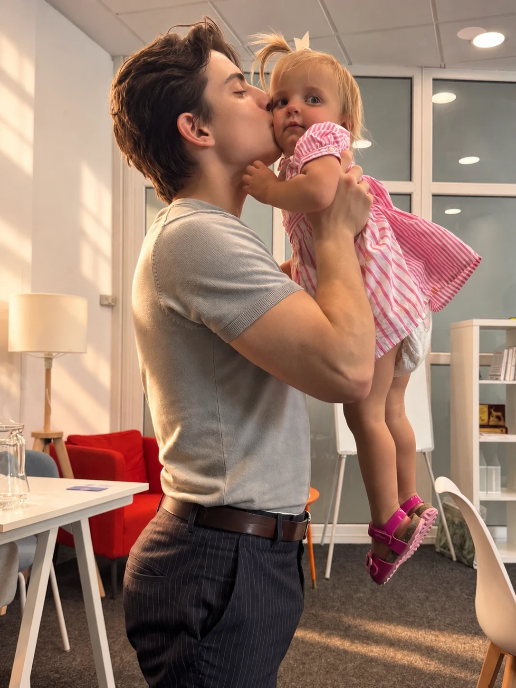
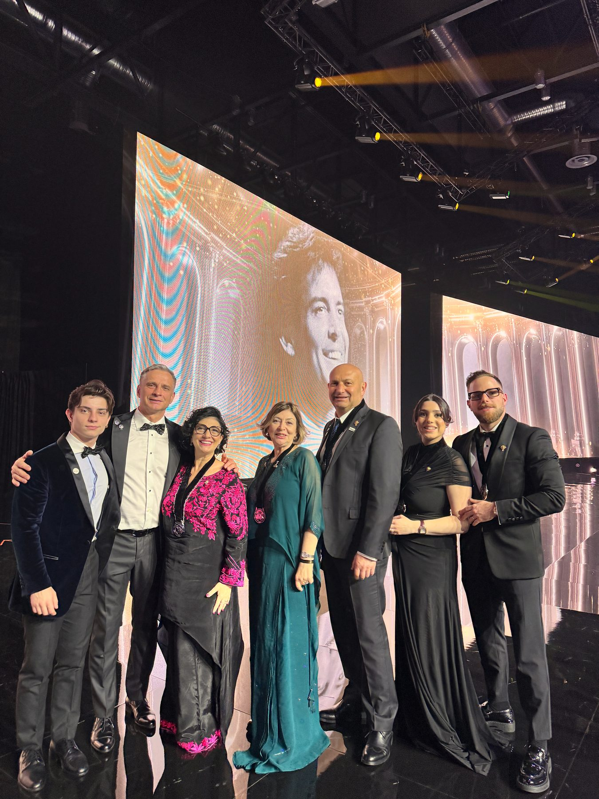
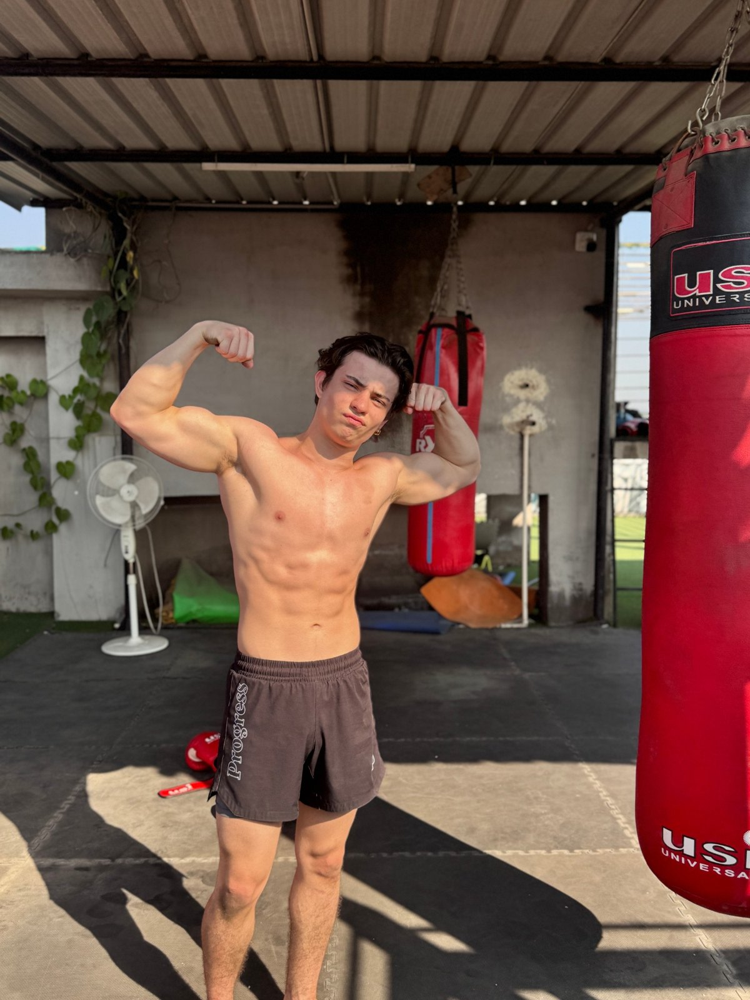

Gabriel Neshto.
Antrenor personal certificat ISSA, luptător MMA semi-profesionist și atlet de atletism, a treia generație dintr-o familie cu 36 de ani în wellness, și omul care și-a construit propriul corp de la zero: peste 20 kg de masă musculară.
Nu îți vând un plan perfect. Îți ofer o direcție realistă, construită în jurul vieții tale, nu invers.


Formare.
Certificat ISSA
Certificare de antrenor personal de la International Sports Sciences Association, dublată de ani de studiu sistematic în științele sportului, nutriție și sănătate.
Atlet în competiții
Peste 20 kg de masă musculară construită prin nutriție corectă și antrenament. Concurează ca luptător MMA semi-profesionist și atlet de atletism.
36 de ani de moștenire
Familia Neshto lucrează în wellness de 36 de ani și a ghidat mii de oameni. Gabriel a crescut în acest mediu și duce tradiția mai departe.
Comunitate internațională
Clienți din peste 20 de țări, din Franța, Elveția și Marea Britanie până în SUA, India și Singapore. Aproape 30.000 de urmăritori online.
„Corpul tău e singura afacere pe care nu o poți vinde, înlocui sau abandona. Începe să investești în el."
Drumul lui Gabriel.

01Punctul de pornire
Subponderal, stil de viață haotic, încredere aproape de zero.

02Schimbarea
Nutriție corectă + antrenament structurat → peste 20 kg de masă musculară.

03Sportul
Azi concurează ca luptător MMA semi-profesionist și atlet de atletism.
- 04
Formarea
Ani de studiu în științele sportului și nutriție, confirmați prin certificarea ISSA.

05Boost Club
Toată experiența se întoarce acasă, în București. Vii, te măsori, pleci cu o direcție clară.
36 de ani de wellness. O tradiție care continuă.
Familia Neshto lucrează în nutriție și wellness din 1989. De peste trei decenii, au ghidat mii de oameni de toate vârstele, cu tot felul de obiective: să slăbească, să devină mai puternici, să-și recapete energia. Pe parcurs au construit echipe în mai multe țări și au ajuns la unul dintre cele mai înalte niveluri de recunoaștere din industria lor.
Gabriel a crescut în mijlocul acestei munci. A văzut ce schimbă cu adevărat viața oamenilor și ce nu: obiceiurile care rămân, sprijinul care te ține pe drum, detaliile care fac un plan realist.
Asta înseamnă că în spatele Boost Club nu stă un antreprenor care a citit câteva cărți. Stă o familie care a văzut ce funcționează pe mii de oameni reali, în timp real, timp de aproape patru decenii.
Boost Club este al lui. Aceleași principii dovedite, aplicate cu o perspectivă mai tânără și mai modernă, construite pentru ritmul vieții de azi.




Din ring și de pe pistă, în club.
Disciplina din MMA și atletism este aceeași pe care Gabriel o aduce în consultații: pași măsurabili, executați consecvent, fără scurtături.
Aproape 30.000 de oameni îl urmăresc pe rețelele sociale, unde conținutul lui despre nutriție, antrenament și stil de viață a strâns milioane de vizualizări.